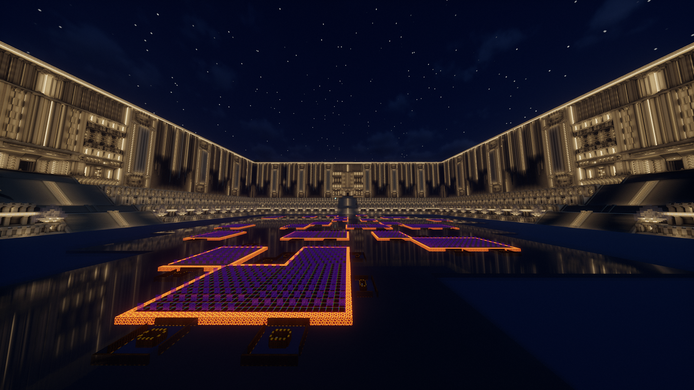

3M Rocket Looting Slime Farm
3Mのslime farm。砂岩を使ったDecoで神殿のような作りをしている。NE側にはrocket lootingを使った処理層に4D alignedのitem collection及びbulkがある。
私たちがASTRAL-SMPの世界で生きた証。
3Mのslime farm。砂岩を使ったDecoで神殿のような作りをしている。NE側にはrocket lootingを使った処理層に4D alignedのitem collection及びbulkがある。
作業の中核を担うメインストレージ。総ブロック数は1000万越えと、世界3位を記録。ASTRALらしい宇宙船をモチーフにしたDecoであり、倉庫部分の外周にはメンバーの居室が存在する。

2×2 chunk の y0 gold farm。suppressionを使わずに制作された。height mapの都合上、湧き層のガスト対策にエンドクリスタルを用いることが好ましいとされているが、1.19.4ではバグによりマグマキューブが湧いてしまうため仕方なく亀の卵を浮かせている。
864体のピグリンを使ったピグリン交易所。アイテム数にして2.92M/hのアイテムを集めることができ、2026年1月現在、世界1位の効率を記録。ネザークォーツの効率は192k/hである。まさに金が溶ける速度で交易が行われる。